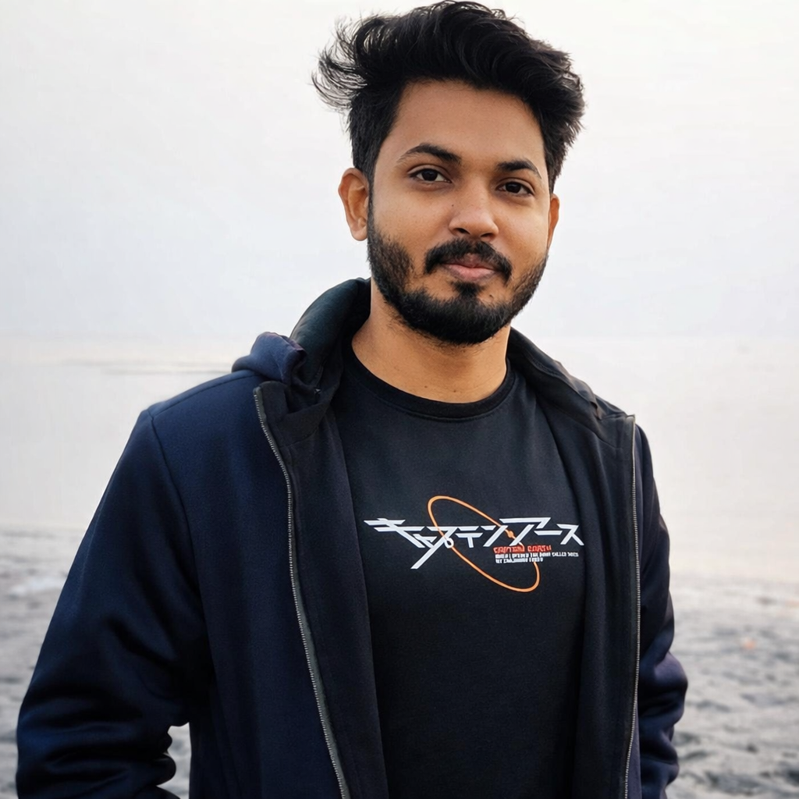

Curriculum Vitae (Biodata)
Md Anamul Shajid
BSc in Computer Science & Engineering | Lecturer at Jolai Islamic Darul Ulum Islamia Fazil Madrasa (Appointed by NTRCA) and Meta Engineer at SM Technology (Part-time)

Add Photo
Personal Details
- Full Name
- Md Anamul Shajid
- Date of Birth
- 01 Jul 1997
- Age
- 28 Years
- Height
- 5 ft 10 in
- Weight
- 72 kg
- Blood Group
- A+
- Religion
- Islam
- Marital Status
- Unmarried
- Nationality
- Bangladeshi
Education & Career
- Highest Qualification
- BSc in Computer Science & Engineering
- BSc Institute
- Dhaka City College
- HSC (Inter)
- Cumilla Govt College
- SSC
- Cumilla Zilla School (2012)
- SSC GPA
- 5.00
- HSC GPA
- 5.00
- Occupation
- Currently engaged in dual employment (parallel)
- Employment 1
- Lecturer at Jolai Islamic Darul Ulum Islamia Fazil Madrasa (Appointed by NTRCA), Komolpur, Sadar Dakshin, Cumilla
- Employment 2
- Meta Engineer at SM Technology, Banasree, Dhaka (Part-time)
Family Information
- Father's Name
- Md Anwar Hossain
- Father's Occupation
- Retired Govt Job Holder, Power Development Board
- Mother's Name
- Amena Begum
- Mother's Occupation
- Housewife
Sibling Details (In Order)
- 1st (Elder Sister): Arifa Yeasmin Shemu, Co-In-Charge, Ibn Taimiya School & College, Tomsom bridge, Comilla
- Sister's Spouse: Md Abu Ayaz Arju, Teacher (English), Nawab Faizunnessa and Badrunnessa Amal High School, Laksham
- 2nd (Elder Brother): Md Yeasin Arafat, Senior Software Engineer (Remote), Surbana Jurong, Singapore
- Sister-in-law: BDS Doctor (Dental), Studied in Chittagong Medical College
- 3rd (Self): Md Anamul Shajid (2nd among brothers)
- Younger Brother: Studying at Bangladesh Marine Academy, Sylhet
Address
- Permanent Address
- Durgapore (Noapara), Kabila Bazar, Burichong, Cumilla
- Present Address
- Jangalia, Near PDB School, Paduar Bazar Bissoroad, Cumilla